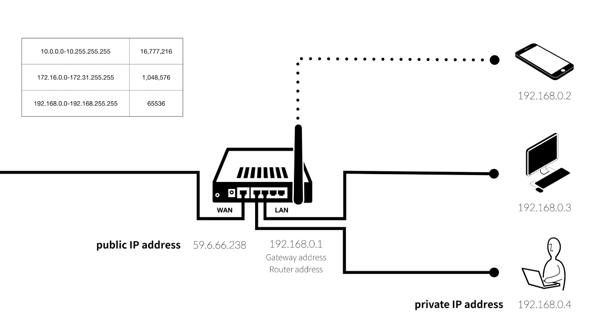

컴퓨터가 서로 통신을 하기 위해서는 각 컴퓨터 마다 IP address 가 필요합니다.

이미지의 오른쪽 컴이 왼쪽의 컴에게 무언가를 요청한다면 신호가 13.124.77.38 로 보내지게 된다 그리고 이때 누가 이 신호를 보냈는지 또한 보내지게 된다 이때 이 신호는 59.6.66.238 이 될 것이다. 이후 이 신호를 받은 13.124.77.38 의 컴퓨터는 요청 받은 사항들을 처리해서 다시 신호가 보내진 곳, 즉 59.6.66.238 로 신호를 보내게 된다. 이를 통해서 두 컴퓨터들 간에 서로 정보를 주고 받는 것이다.
우리가 통신사와 계약을 하게 되면 하나의 ip address 를 가지게 된다. 하지만 이 하나를 가지고 집에 있는 여러대의 기계들을 연결하기에는 부족하다. 그렇다고 통신사로 부터 여러개의 ip address 를 받기에는 금액적으로 부담이 될것이다. 이를 해결하기 위해서 우리는 보통 공유기 영어로는 router 이라고 불리는 장치를 사용하게 된다. 그러면 우리는 회사로 부터 받은 ip address 를 router 에 다가 연결을 한다. 그러면 이제 router 가 59.6.66.238 이라는 ip address 를 가지게 되는 것이다. 이후 공유기는 집에 있는 각 장치들에게 고유의 ip address 를 부여하게 된다. 이때 지역내에서 서로 부여되어진 ip address 를 묶어서 LAN (Local Area Network) 이라고 부르면서 private ip address 즉 사설 ip address 에 포함이 되는 것이다. 여기의 그림에서는 192.168.0.1, 192.168.0.2, 192.168.0.3, 192.168.0.4 가 될것이다. 그리고 넓은 범위의 연결을 위해서는 WAN (Wide Area Network) 가 필요하게 되는데 여기에서는 59.6.66.238 이 되는것이고 이는 public ip address 에 포함이 된다. 또한 위에 주어진 표는 LAN 에서 사용되어지고 있는 ip address 의 범위들을 나타내고 있다. 표 가장 아래의 범위인 192.168.0.0 - 192.168.255.255 가 가장 작은 범위의 LAN 을 가지고 있다, 하지만 보통 일상생활에서는 192.168.*.* 로 시작하는 ip address 를 가장 많이 보게 될것이다.